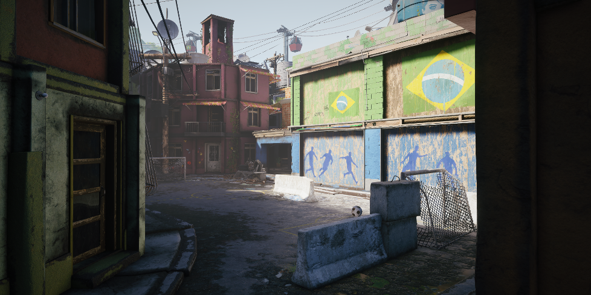
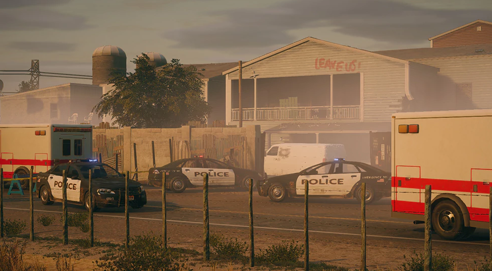

HOME
All Maps
The environment in Rainbow Six Siege is destructible. This means some floors, windows, doors, and walls can be broken. Doors and windows take 3 melees to break but can also be broken by shooting down. Floors and walls can only be broken with shotguns and breach charges. Certain sections of the floor are called "hatches" and these are breakable parts in the floor that allow you to fall completely through to the floor below. Hatches can be reinforced by defenders. Another part of all maps are cameras which are preset throughout the buildings. Defenders can view cameras at any time but attackers can shoot to destroy them. All maps are available to any game mode (hostage, bomb, and biohazard).
Bank
"An iconic encounter for LA SWAT forces, this map depicts an assault on a major bank. The focus is on providing a sense of progression for attackers as they make their way through progressively more fortified areas of the building."
Bartlett University
"Team Rainbow has been called to assist local law enforcement and regain control of Bartlett University in Cambridge, Massachusetts. This map offers an asymmetric layout with breathing room between hot zones. Navigate the facilities' barricades and blast through the brick walls that have protected the leaders of tomorrow."
Hereford Base
"The CTU training grounds of the first and most iconic CTU. This is where SAS agents learn their craft and as such it a patchwork of plywood targets, sandbags, barbed wire and other obstacles. One of the most archetypal examples of siege gameplay."
Border

"Somewhere in Middle East, team Rainbow has been called in to assist local law enforcement regain control of the border. A mix of old and new construction and open air pathways, this is one of the most destructible and open map in the game."
Chalet
"A shootout in an “après-ski” chalet in the French alps, this area contrasts the warm, cozy mood of its interiors with the cold, constrained visibility of its exteriors."
Clubhouse
"This map depicts an assault on a biker gang clubhouse. Featuring a full bar, gaming tables and leather furniture, this mixed interior/exterior layout offers a host of interesting tactical possibilities for both attacker and defender."
Coastline
"Team Rainbow has been called to safeguard the seashore of Ibiza, Spain. Two of G.E.O.'s most resourceful Operators have been selected to provide their unique tactical expertise to the unit. Stationed on Ibiza’s rocky shore, course through Balearic ruins and navigate booming bars to neutralize the threat. Get ready for a surround flow of combat laced with chaotic rushes as you explore a paradise gone wrong."
Consulate

"A high-risk, highly secured fortified location, this map depicts an assault on a French consulate in Ivory Coast."
Favela

"Team Rainbow has been called to pacify and regain control of the Favela. Mixing colorful and narrow streets with high vantage points, this map supports exterior shell destruction which renders it as the most destructible to date."
House

"Playing on themes of familiarity and vulnerability, this encounter takes place in a typical suburban home. It’s a prime example of destructive depth and replayability, and is one of the showcases for classic siege gameplay."
Kafe Dostoyevsky
"This high-class café in central Moscow is the pinnacle of glitz and glamour, and is a natural intervention ground for Spetsnaz forces. The grounds have been seized by terrorists at peak hours on charismas eve, and destruction of the rich, chic, classic decor will be a key element of this map."
Kanal
"Taking place in the industrial area of Hamburg, Germany, ‘Kanal’ involves multiple buildings with strategic connecting points over canals. It features many interesting strategic possibilities created by the many bridges, buildings and related vantage points of its terrain."
Oregon

"‘Oregon’ depicts an assault on a fortified survivalist compound. It feels rustic, eclectic and lived-in, and covers a vast, spread out layout requiring adapted tactics to sweep and hold effectively."
Presidential Place
"One of the most iconic settings for a CTU operation, this presidential plane offers an exotic and unique siege experience. It is claustrophobic, tense and constrained, involving limited breaching opportunities and sight lines."
Skyscraper
"Perched on top of Skyscraper in Nagoya, Japan, you will explore refined works of Japanese architecture inside a dangerous mansion. Be prepared for vertiginous rappels in the haze of the morning sun, where modernity and tradition meet."
Theme Park

"Team Rainbow has been called to raid an abandoned theme park on the shores of Hong Kong. Two of S.D.U.'s most resourceful Operators were chosen to lead a lethal raid in this challenging perimeter. Get ready to discover a colorful and eclectic new map filled with dynamic and fast-paced face-offs."
Tower

"In Operation White Noise, two 707th SMB Operators scale the snow-capped Mok Myeok Tower to lead a rescue mission in Seoul, South Korea. The modern communications and observation tower offers fresh vertical vantage points overlooking the entire cityscape, and sets the stage for diverse multilevel tactics."
Yacht
"In the Baffin Bay, a luxury yacht has crashed into an iceberg breaching the hull. Rainbow has been sent to secure the stranded vessel as an unidentified submarine has docked near the vessel."